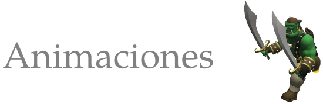
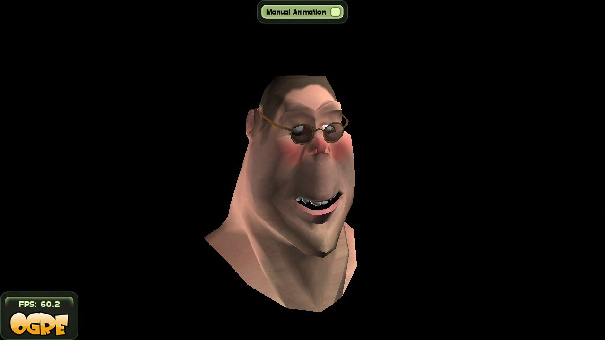
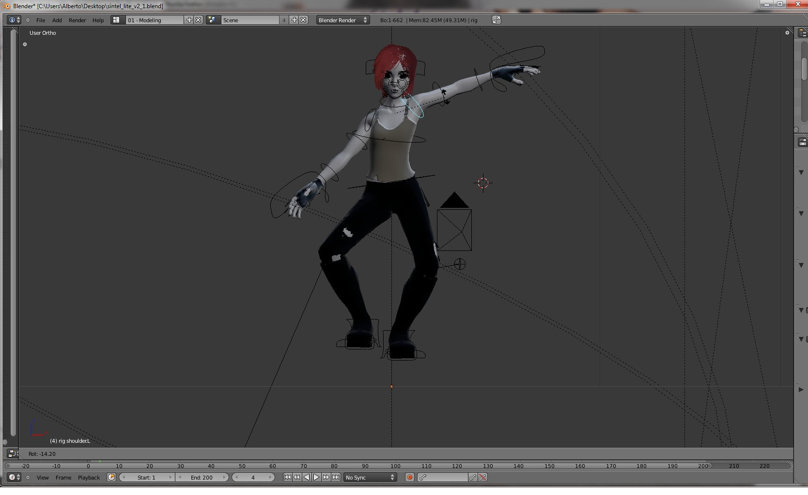

Animaciones en IberOgre
Apr 24, 2011 · CommentsGames development

IberOgre, la wiki de Ogre3D en español, recibe nuevo contenido gracias al artículo “Animación”. Como su propio nombre indica, se hace un repaso sencillo pero completo por el subsistema de animación del famoso motor de renderizado 3D libre. Como siempre, se aceptan críticas constructivas y todo tipo de sugerencias que nos ayuden a mejorar.
]
Entre los temas tratados destacan los siguientes:
- Conceptos básicos de animación: la animación en el mundo de los videojuegos se sigue basando en parte en la animación tradicional. La transición rápida entre distintas poses construye la ilusión de movimiento. Concepto del fotograma clave.
- Tipos de animación: Ogre soporta tres tipos de animación: basada en esqueletos, de vértices y combinada. Hablamos de todas aunque nos centramos en la primera.
- La clase AnimationState: mecanismos para consultar, configurar, ejecutar y modificar animaciones de entidades en Ogre.
- Combinación de animaciones: Ogre permite combinar varias animaciones al mismo tiempo, muy útil para reducir el número de animaciones en la herramienta de modelado.
- Ejemplo: repaso del contenido en el que creamos una escena con Sinbad, la mascota de Ogre. Podemos controlarlo y probar varias de las animaciones que posee.

Debido a una avería en mi equipo de trabajo principal, el desarrollo de Sion Tower sufrirá una parada de un par de semanas. Esto no significa que el proyecto quede inactivo durante dicho periodo sino que los esfuerzos se trasladarán a completar la wiki. Podréis esperar varios artículos nuevos durante los próximos días, ¡pienso darle un gran impulso!